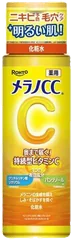
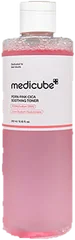
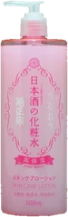
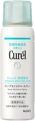

7位

メラノCC
薬用しみ対策美白化粧水
170mL
¥990税込・出典掲載価格
クチコミの要約
- 柑橘っぽい香りでさっぱり
- 体にもバシャバシャ使う人
- 夏のさっぱり系を探すなら
気になる声スースー感じる人もいる
販売価格・容量・送料はリンク先でご確認ください
THE COSME EDIT / 2026.09.13
動画で紹介した7品です。順位は売上ではなく、@cosmeのクチコミ件数の順です。
07 ITEMS 動画で紹介した商品
候補は、ドンキで買える化粧水として紹介している記事（sappiのブログ、マイナビおすすめナビ）とLIPSの化粧水ランキングから選び、楽天で買えるものだけにしました。件数は、いま売っている商品のページの数字で、リニューアル前の旧商品の件数は足していません。アヌア ドクダミ77 スージングトナーは@cosmeで生産終了になっていて、後継品はドンキでの取り扱いを確かめられなかったので外しています。
価格は出典掲載時のものです。楽天の現在価格とは異なる場合があります。

メラノCC
170mL
¥990税込・出典掲載価格
クチコミの要約
気になる声スースー感じる人もいる
販売価格・容量・送料はリンク先でご確認ください

medicube
250mL
¥2,350税込・出典掲載価格
クチコミの要約
気になる声乾燥肌だと物足りないって声も
販売価格・容量・送料はリンク先でご確認ください

CNP Laboratory
100mL
¥1,650税込・出典掲載価格
クチコミの要約
気になる声香りが気になるって声も
販売価格・容量・送料はリンク先でご確認ください

肌ラボ
170mL
¥990税込・出典掲載価格
クチコミの要約
気になる声冬は乾燥するって声も
販売価格・容量・送料はリンク先でご確認ください

菊正宗
500mL
¥990税込・出典掲載価格
クチコミの要約
気になる声日本酒の香りは好みが分かれる
販売価格・容量・送料はリンク先でご確認ください

ナチュリエ
500mL
¥748税込・出典掲載価格
クチコミの要約
気になる声これだけだと乾燥する人もいる
販売価格・容量・送料はリンク先でご確認ください

キュレル
150g
¥1,980税込・出典掲載価格
クチコミの要約
気になる声これだけだと物足りないって声も
販売価格・容量・送料はリンク先でご確認ください
SOURCE & NOTES
集計期間：2026年9月13日に確認した件数です。売上の順ではありません。
価格は@cosmeに載っている税込価格です（メラノCCと白潤プレミアムは@cosme編集部調べ）。ハトムギ化粧水はオープン価格のため、LIPSに載っている価格です。